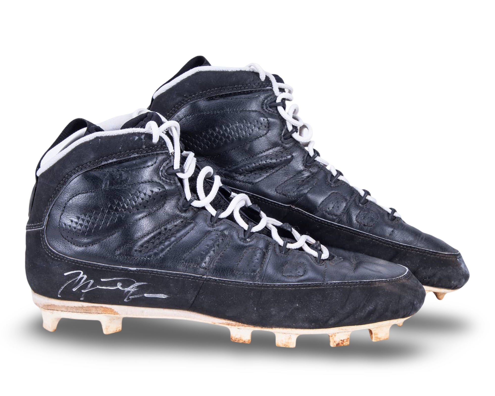
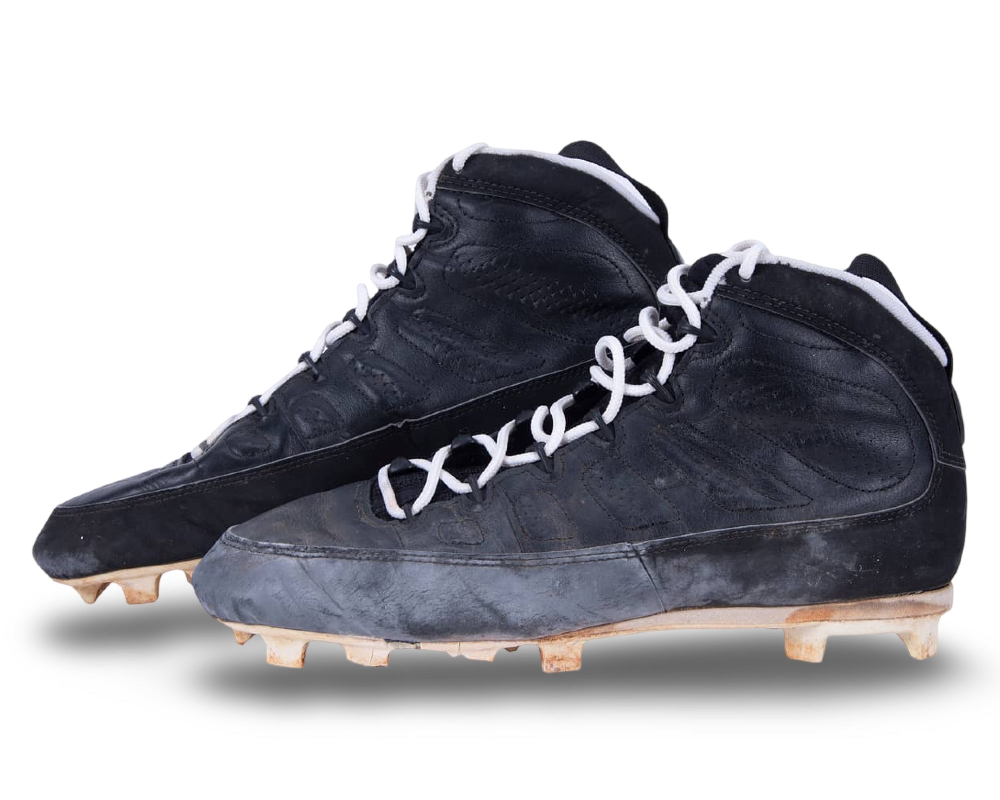
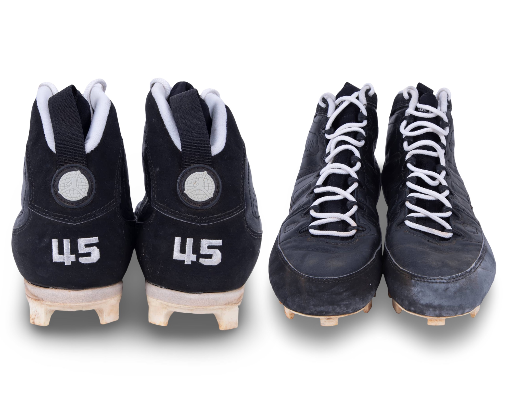

Air Jordan IX - baseball cleat with a molded bottom.
Attributed to a Birmingham Barons game during the 1994 season.
Public Sale
- Auction House: Goldin Auctions
- Sale Date: December 13, 2020
- Lot #: 268
- Sale Price: $73,200
Photo Match Details
- Photo-Matched: Yes
- Games Photo-Matched: 1
- Photo-Matched By: SIA
Research & Provenance
- A letter of provenance from George Koehler accompanies these shoes, they were part of his personal collection.